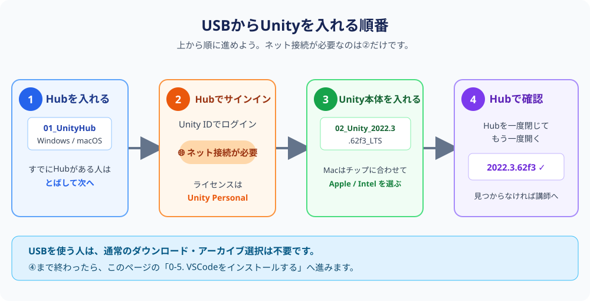

当日サポート
USBからUnityを入れよう
講師からUSBを受け取った人だけ、このページを見ます
🎯 このページでやること
- USBからUnity HubとUnity 2022.3.62f3を入れる
- Unity Hubの一覧に指定バージョンが表示されることを確認する
USBは講習会場でのみ配ります。自宅で進める第0章の手順とは別です。わからない画面が出たら、USBを抜かずに講師を呼んでください。

1Unity Hubを入れる（まだない人だけ）
USBの 01_UnityHub を開きます。Windowsは Windows、Macは macOS のインストーラーを実行します。すでにHubがある人は次へ進みます。
2Unity Hubでサインインする
Unity Hubを開き、Unity IDでサインインします。ライセンスを聞かれたら Unity Personal を選びます。この手順だけインターネット接続が必要です。
3Unity本体を入れる
USBの 02_Unity_2022.3.62f3_LTS を開き、インストーラーを実行します。Windowsは Windows、AppleシリコンMacは macOS_Apple_Silicon、Intel Macは macOS_Intel を選びます。
🍎 Appleシリコン（M1/M2/M3/M4など）のMacで「Rosettaが必要です」という画面が出ることがあります。これはエラーではなく、Unityを動かすために必要な部品です。表示されたら「インストール」を押してそのまま進めばOK（macOSが自動で入れてくれます）。
4表示を確認する
インストール後、Unity Hubを一度閉じて開き直します。一覧に 2022.3.62f3 と表示されたら完了です。表示されない・途中で止まった場合は、講師へ声をかけてください。